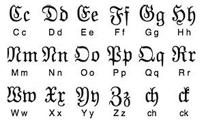
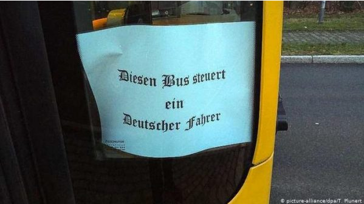

Why Fraktur began being used less
Fraktur is often associated with Nazi propaganda, which has led to it being mistakenly called the "Nazi Font." However, this is a misconception. In reality, Hitler disliked Fraktur, believing it kept Germany tied to the past. He eventually advocated for the use of Roman-style typefaces, seeing them as more modern and aligned with his vision to rule the world.
Fraktur was widely used in German culture, not just in Nazi propaganda. It appeared in various forms of art, literature, and historical records long before. However, due to its association with that period and push for a more legible typeface, it gradually fell out of use and is no longer commonly taught in schools (going as far as to ban it). As a result, many historical texts written in Fraktur are becoming more difficult to read, which contributes to the typeface being less understood.
Although Fraktur was a common typeface in Germany, it has unfortunately been adopted by some extremist groupstoday due to its historical implications. For example, this image shows a bus in Germany displaying Fraktur lettering to indicate that the driver is German. Almost to say that because I am German you are safe on this bus.
The decline of Fraktur, due to its banning and gradual removal from education, may have contributed to its later adoption by extremist groups. Some may have viewed the loss of the typeface as an erasure of German heritage, leading them to reclaim it as a symbol of national identity. This could explain why Neo-Nazis continue to use Fraktur today, associating it with a sense of cultural or ideological authenticity. However, It was simply the standard way Germans wrote for centuries. Just as many cultures have their own preferred writing styles, Germany traditionally used Fraktur while others used Roman scripts